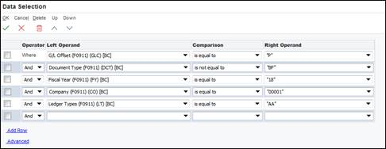
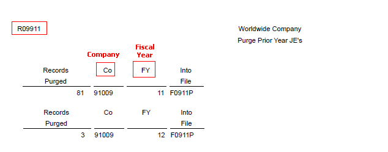

This document provides an overview of using the Account Ledger Purge (R09911) to purge account ledger (F0911) records.
Scope
This document is intended for both Technical and Finance Functional users who will be involved in the purge of general ledger data in EnterpriseOne system.
Details
Overview
If you create a summarized record or you want to increase disk space, you can purge journal entries by running Purge Prior Year JE's program (R09911) that does these tasks:
Copies prior year journal entries in the F0911 table to the purge F0911P table.
Marks the copied records in the F0911 table as purged.
Deletes purged records from the F0911 table when certain conditions are met.
Prints a report that lists the number of records purged by company.
The purge program is also designed to delete Account Ledger (F0911) records no longer needed on a daily basis, or records that correspond to other transactions (A/P, A/R, F/A) that have been previously purged.
When you run the Purge Prior Year JE's program, prior-year transactions will be either:
Purged and Deleted.
Writes an image of F0911 record to the F0911P purge file.
Updates Purge Code in F0911 (GLPRGE) with 'Y'.
Deletes from the F0911 Account Ledger file.
Completely bypassed for purge and delete.
Before the system writes the record to F0911P purge file and deletes the F0911 record, the record must meet all of following conditions:
Current-year transactions must contain a Summarized Code - 'Y' (GLSUMM) to be deleted from the F0911 table. Prior-year transactions in these ranges can be deleted, regardless of summarization.
The account number is not within the bypass purge ranges for AAI item GLPRxx.
For accounts within the reconcilable ranges in AAI item GLRCxx to be purged, the reconciled code must be a value other than blank.
If F0911 record has '*' in the Payment Number (GLCN) field, it will purge the record if the processing option for R09911 is set to a '1' and the G/L date for the record is more than three fiscal years old. The '*' value denotes a questionable 1099 record, partial payment, retainage, or discount.
If the processing option for Service Billing clients for R09911 is set to a '1' and if the account is billable, the value of bill code (GLBC) for F0911 transaction must be either X (direct charge allocated or billed) or Y (manually allocated and billed). Account is billable if value of BILL field in F0901 for that account id is 'Y'.
NOTE: Data in the F0911P purge file can only be viewed through a data base utility. There is no standard report or application through which to view this data within EnterpriseOne.
For the current year: Summarized records are required to support the F0902 table. Unsummarized records for the current year are bypassed when the system purges prior-year journal entries.
For the prior year: Account balances can be set to zero by the Repost Account Ledger program (R099102) if any purged prior-year records are left unsummarized.
Disk space should be evaluated prior to executing the purge program. The program will copy records from the F0911 to the appropriate purged file and will utilize more disk space until the purged files can be removed.
Transactions should be purged for one fiscal year at a time. If multiple years are to be purged, run the purge program multiple times.
AAI Setup
Set up purge parameters in the following AAIs:
GLPRxx
The AAI items for GLPRxx define account ranges that you do not want to purge.You must define complete ranges, consisting of a beginning and an ending AAI item. The first range must begin with GLPR01. We recommend that you end the first range with GLPR02, which is the next consecutive number. Define the next range, if needed, to begin with GLPR03 and end with GLPR04, and so on. This table shows the information needed to set up AAI item GLPRxx:
AAI Item
Description
Business Unit (Not used)
Object (Required)
Subsidiary (Optional)
Sequence Number
GLPR01
Bypass Purge Accounts
NA
3000
Blank
1.440
GLPR02
Bypass Purge Accounts
NA
3100
99999999
1.440
GLRCxx
The AAI items GLRCxx define a range of accounts that must be reconciled before they are deleted. The Reconciled field must contain a code from UDC table 09/RC to be deleted.You must define complete ranges, consisting of a beginning and an ending AAI item. The first range must begin with GLRC01. We recommend that you end the first range with GLRC02, which is the next consecutive number. Define the next range, if needed, to start with GLRC03 and end with GLRC04, and so on. This table shows the information needed to set up AAI item GLRCxx:
Enter a '1' to purge and delete questionable 1099 transactions that are more than three fiscal years old (current and previous two fiscal years).
Leave blank (default) to purge but not delete any questionable 1099 transactions.
2. Billable Transactions
Enter a '1' to delete and purge billable transactions that have any valid 'Bill Code' attached to them.
If left blank (the default) any Bill code other than an 'X' or a 'Y' will be purged but not deleted, however, all 'X' and 'Y' Billable transactions will still be purged and deleted.
NOTE: This option is intended for those clients who are using Service Billing and are NOT using PeopleSoft Energy software.
Data Selection
It is recommended that the following data selection be used when running the purge program to further restrict the records from being deleted.
Required selections: • G/L Post Code = 'P' (Not Optional) • Document type not = 'BF' (Not Optional) • Fiscal year (only one year at a time can be purged). Enter the fiscal year (where xx equals fiscal year) to correctly name the purge table F0911xx. Optional selections: • Company • Ledger type
Example:

NOTE:
You can purge F0911 transactions only one year at a time.
There is no need for specifying data selection to exclude posted records and BF document type records, since its hard-coded inside the report logic.
Reviewing the Purge Report

The resulting report shows the number of F0911 records being purged, sorted by Company and Fiscal Year.
You should copy the F0911P table to another medium. If you keep this table on your system and you purge again, the system adds newly purged records to the F0911P table, which will decrease available disk space.
After records are copied to the F0911P purge file, the records are not generally deleted automatically from the corresponding index to the table. Database Administrators need to periodically reorganize indexes for tables that have had records deleted to reclaim the unused space. Also, the deletion can leave the table itself fragmented. Hence it is recommended that you work with your Database Administrators to periodically reorganize the table data, so it is contiguous and no longer fragmented. All databases have extended ANSI Structured Query Language (SQL) to handle index reorganization and table reorganization, and all of them have different functionality or SQL commands to do this.
NOTE: The Purge Prior Year JE's program (R09911) purges only records from the F0911 table. This program does not purge corresponding records in other systems, such as Accounts Payable or Accounts Receivable. To avoid integrity issues between General Accounting and other systems, contact your system administrator to develop a plan to purge corresponding records.
Frequently Asked Questions
Question 1: Does purging the F0911 only and not the F0902 cause imbalance or data integrity issues?
Answer 1: The recommendation is that the F0911 table be summarized first prior to running the purge. Summarization creates a BF record type that summarizes all the line entries by account/fiscal year/period in the F0911. The BF documents will always keep the F0911 and F0902 in balance and will be helpful in case you might ever need to regenerate the F0902 with the Repost Account Ledger (R099120) or so that on-line inquiries that read data from F0902 and F0911 will match.
Question 2: Where do I find additional information on available purge programs within EnterpriseOne?
Question 3: Why is the recommendation made to copy the F0911P to another medium?
Answer 3: The purge programs are designed to increase disk space by deleting Account Ledger (F0911) records that are no longer needed on a daily basis. Disk space should be evaluated prior to executing the purge program. The program will copy records from the F0911 to the appropriate purged file and will utilize more disk space until the purged files can be removed. Its recommended you should copy the F0911P table to another medium to save on disk space.
Question 4: What is the impact of NOT purging F0911 records?
Answer 4: Over time, the F0911 file will grow in size, and this may eventually cause reports to run slower or queries within applications to take longer to return results simply because there is a larger amount of data to be searched through. The potential for impact to performance would be expected to vary for every instance of the software installation because the ability to search/query/process through the F0911 records would correlate with the unique variables of the install (for example the processing power of the servers, database size, etc.).
Question 5: If the F0911P is not moved to another medium and the purge is run again, are the records added to the table?
Answer 5: If you keep this table on your system and you purge again, the system adds newly purged records to the existing records in the F0911P table. However, this defeats the overall purpose of the purge in reducing disk space. In order to reduce disk space, the table should be copied to another medium.
NOTE: Space is not regained immediately until the F0911 file is "reorganized" and the purge file has been moved to tape or diskette. The reorganization procedure removes the space created by deleted records in the file and "re-orders" the existing records. A "reorganize" program does not exist in EnterpriseOne since it supports multiple database management systems. Contact your database administrator for more information about this process.